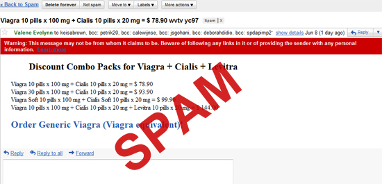
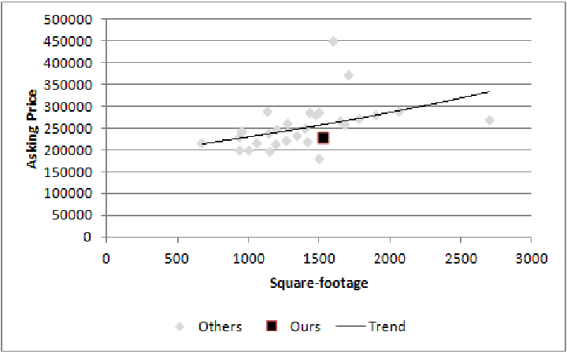

Analysis
Table of Contents
1 Analysis
2 Overview
- What can you do with data?
- How?
2.1 Details notes
- Types of models
- Simple stats
- MapReduce for homework
3 Types of Models animate
- Recommenders
- Classifiers
- Regressions
- Outliers
3.1 Some examples notes
- Question: how are models used in the real world?
- Amazon or Netflix style recommendations based on prior history
- Spam/Ham for email, also clustering and discovering classifications
- Guessing the price of a house (Zillow or Redfin)
- find anomalous transactions, eg. finding fraud for credit cards
3.2 Simple to Sophisticated two_col

- Thousands of ways to calculate a model
- Combinatorially more ways to combine them
- In technique, large amount of overlap between purpose
3.3 Survey notes
- ML and DM fields churn these models out
- Newest methods combine multiple models (boosting & bagging)
- If you want to learn more, we'll cover some of this in Data Mining
- We're just going to go over the most well known model for each type
- In general, this is the right way to approach it: start very simple, get sophisticated in order to correct for specific problems in your domain
4 Recommenders animate
- Popularity
- Collaborative Filter
4.1 Simple notes
- For all of these, start simple
- If I told you the homework was a recommender system, and you could make it as simple as you'd like, what technique would you use?
- Amazon Personalization team: just recommend Harry Potter
- Next step: Collaborative Filter
- What do people who are similar to you like?
4.2 Collaborative Filter two_col
- Find people similar you
- Find what they like
- Recommend new items to you
- Find items you've liked
- Find similar items to those
- Recommend new items to you
4.3 Details notes
- In general, challenge is being specific about words
- What does it mean to be similar to you?
- Bought the same stuff
- Is a friend
- Same demographic
- What does it mean to be similar to an item?
- Bought by same people
- Same category
- Similar description
- What does it mean to have a similar description?
5 Classifiers two_col animate

- Spam/Ham decision
- Existence of word (eg. Viagra)
- Now what about V1agraa?
- Naive Bayes classifier
5.1 Simple notes
- Again, what would you do right now?
- Check for spammy words
- How do you keep learning the words that are spammy?
- Is "Russian" spammy? Maybe only for some people?
5.2 Naive Bayes

- Probability of spam given it contains Viagra (W)
- Probability of spam * probability of that word given spam
- Over probability of that word in either
5.3 Probabilities notes
- We're not going to say for sure spam or not, just calculate the probability
- Learn that probability based on past examples
- Intuition: if Viagra is always showing up in spammy mail, a new mail with Viagra is likely to be spam
- Lots of logical problems with Naive Bayes, but in practice, works quite well
6 Definitions
- Class
- Group or type that an item belongs to
- Feature
- An extractable property of an item that may be useful in classification. aka Signal
- Label
- True class or property of an item
- Training Set
- Items that have been labeled
6.1 Examples notes
- Class
- Spam/Ham
- Feature
- "contains word Viagra", "was purchased by Sally"
- Label
- Clicking "Spam" button in Gmail
- Training Set
- All of the email you've clicked Spam/Not Spam
6.2 Housing Example
- Class
- Customer likes it or not
- Features
- Price, city, square footage, # bed/bath
- Label
- Like/Don't Like
- Training Set
- Houses customer has toured or bid
6.2.1 Setup notes
- Let's say you're Redfin trying to recommend a house to a customer
- Customer likes it
- Price, city, square footage, # bed/bath
- Like/Don't Like
- Houses customer has toured or bid
7 Regression Analysis
- Estimate the price of the house
- Model the relationship of all the features to the outcome
- In general, features are numbers, estimate is a number

7.1 Calculation notes
- In general want to minimize the space between the points and the line
- Like in the case of Yelp reviews, may need different formulas to draw lines
- Numbers in, number out
- So "city" may not be a good feature for regression, but what could you
replace it with?
- Average price of home in city
- And what would the training set be?
8 Calculation
8.1 Switch Gears notes
- Let's talk about how models and analysis are done
9 Tools
- Languages
- Matlab Python R SQL
- Tools
- Unix MySQL ReST scikit-learn
- Paradigms
- Single-Threaded Concurrent MapReduce
9.1 Details notes
- Languages are in alphabetical order. Real order depends on what you like, what you're doing, interfacing with, etc.
- Unix tools like
lesswgetheadcut - scikit-learn machine learning Python library
- Single-Threaded, what you're used to when running a single program
- How do you split up a task, eg. extracting all of the features from items?
- Concurrent programs trickier, many processes are happening at once. Track shared state.
- MapReduce is what we'll focus on, widely used in industry, buys you a lot of scalability, structured way to think about a problem
10 MapReduce
- Map
- Extract a property to summarize over
- Reduce
- Summarize all items with a particular propery
- Simple: Each operation stateless
10.1 Reading notes
- Reading this week includes a video explaining MapReduce much more generally
- This lecture will focus on it from a practical standpoint for homework
- MapReduce's main benefits are for running over many machine, fault tolerance
- But we'll just practice on one machine
10.2 Example
- URL Shortener
- How many actions have we seen?
- Redirects: 200, Saves: 40, Loads: 60
10.2.1 Details notes
- Redirects
- How many times have we expanded a short link to a long one?
- Saves
- How many times have we saved a new URL?
- Loads
- How many times have we just loaded the front page?
- First
- So first step in MapReduce is what?
10.3 Map
- Input
- Key, Value
- Output
- Keys, Values
10.4 Map Example
- Input Key
- Log line number
- Input Value
- Log line text
- Output Key
- Action
- Output Value
- times this action has occurred on this line
10.4.1 Counts notes
- Log line number is not helpful in our specific case
- Log line text: we hope it is machine readable so we can accurately extract the action
- It has datetime, cookie, action, etc.
- How many times has this action occurred? 1
10.5 Status?
load 1 save 1 redirect 1 redirect 1 load 1 redirect 1 load 1 save 1 redirect 1
10.5.1 Middle Step notes
- From log lines, we've extracted the information out that we care about
- The counts and the actions
- Next step summarize
- Next step after Map?
10.6 Reduce
- Input
- Key, Values
- Output
- Keys, Values
10.6.1 Value*s* notes
- Note: The input is values! Plural
- Because we get a key and all of its associated values
- Remind me: what are we trying to get out of this computation?
- So what do you think the output keys are?
- Values?
10.7 Reduce Example
- Input Key
- Action
- Input Values
- Counts:
[1,1,1,1] - Output Key
- Action
- Output Value
- Total Count
10.7.1 Details notes
- Action is one of load save redirect
- To get total count, sum all of the counts
10.8 Example Output
- Output Key
- Action
- Output Value
- Total Count
"redirect" 4 "save" 2 "load" 3
11 Point?
- A lot of work for counting!
- More complex calculations can be done this way, eg. PageRank
- Stateless constraint means it can be used across thousands of computers
11.1 Details notes
- By only looking at keys and values, can optimize a lot of backend work
- Where to send the results?
- What to do when a computer fails? (Just restart failed part)
11.2 Implementation
load 1 save 1 redirect 1 redirect 1 load 1 redirect 1 load 1 save 1 redirect 1
11.3 Intermediate notes
- This was the situation after map
- Keys all jumbled
- What Hadoop does is sort them and distribute them to computers
11.4 "Shuffle"
load 1 load 1 load 1 redirect 1 redirect 1 redirect 1 redirect 1 save 1 save 1
11.5 Distribute notes
- Now it is easy to distribute, and can handle all the
loadat once
11.6 Inputs
- MapReduce distributes computing power by distributing input
- Input is distributed by splitting on lines (records)
- You cannot depend on lines being "together" in MapReduce
11.6.1 Splitting Files notes
- Image you have a lot of large log files, GB each
- You'd like to let different machines work on the same file
- Split file down the middle, well, at least on a newline
- Enable two separate machines to work on the parts
- You don't know what line came before this one
- You don't know if you will process the next line
- Only view is this line
- Real life slightly more complicated, but mostly hacks around this
11.7 Incorrect Log Style
- URL Shortener logging
app.logger.info("Handling request for " + cookie) ... # find redirect ... app.logger.info("Redirecting to " + destination)
- Ability to associate the redirect with the
cookie?
- eg. which cookie had the most redirects?
11.7.1 No! notes
- Must log everything on same line
- One machine could have the "Handling request.." Another could have "Redirecting to…"
- Collect it all, then log it
11.8 Correct Log Style
- Logging once
log_data['cookie'] = cookie ... # find redirect log_data['action'] = 'redirect' app.logger.info(json.dumps(log_data))